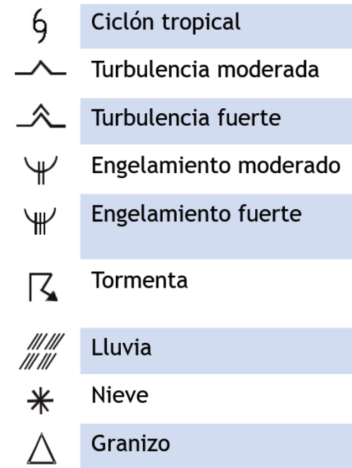

Carta SIGWX:

Leyenda:

Jet Stream: Triangulo = 50 kts | Linea larga = 10 kts | Linea corta = 5 kts
Abreviaturas: ISOL = Isolated (CB aislados) | OCNL = Occasional (CB ocasionales) | FRQ = Frequent (frecuentes) | EMBD = Embedded (CB dentro de otras nubes)